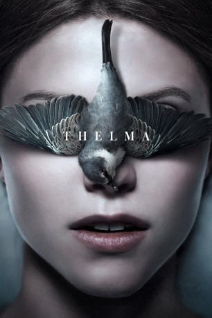

#9377 Thelma
 
 IMDB-Wertung: 7.0 / 10
IMDB-Wertung: 7.0 / 10  Tomatometer: 92
Tomatometer: 92  Metascore: 74
Metascore: 74 
Thelma (Eili Harboe), eine schüchterne, junge Frau, hat gerade ihrer religiösen Familie den Rücken gekehrt und ist von einem kleinen Städtchen an der Westküste Norwegens nach Oslo gezogen, um an der dortigen Universität zu studieren. Als sie eines Tages in der Bücherei schmökert, befällt sie unerwartet ein heftiger Krampf und bald darauf fühlt sie sich zu ihrer attraktiven Kommilitonin Anja (Okay Kaya) hingezogen, die ihre Zuneigung auch erwidert. Als das Semester weiter voranschreitet, ist Thelma jedoch immer mehr von ihren eigenen Gefühlen überwältigt – Gefühle, die sie sich nicht einmal gegenüber sich selbst einzugestehen traut. Zugleich nehmen aber auch ihre Krämpfe zu, die sich schließlich als Symptom übernatürlicher, gleichwohl nicht ungefährlicher Fähigkeiten entpuppen.
Jahr: 2017
Dauer: 116 Minuten
FSK: 12
Land: Norwegen Studio: Koch FilmsTonspuren:
Untertitel:
Auflösung: 1080p (1920x808) Größe: 4884 MB
Genre: Thriller, Horror, Drama, Fantasy, Liebe, Mystery
Regisseur: Joachim Trier
Drehbuch: Eskil Vogt
Soundtrack: Ola Fløttum
Darsteller:
 Eili Harboe als Thelma
Eili Harboe als Thelma- Henrik Rafaelsen als Trond
- Ellen Dorrit Petersen als Unni
- Anders Mossling als Dr. Paulsson
- Lars Berge als Badevakt
- Kaya Wilkins als Anja
- Grethe Eltervåg als Thelma 6 år
- Marte Magnusdotter Solem als Nevrolog
- Vanessa Borgli als Anjas mor
- Steinar Klouman Hallert als Kristoffer
- Ingrid Giæver als Julie
- Oskar Pask als Daniel
- Gorm Alexander Foss Grømer als Gutt på fest
- Camilla Belsvik als Sykepleier hos nevrologen
- Martha Kjørven als Kvinnelig pleier
- Ingrid Jørgensen Dragland als Pleier på Hellersmo
- Vibeke Lundquist als Farmor
- Sigve Bøe als Mann utenfor bil
- Isabel Christine Andreasen als Student på lesesalen
- Tom Louis Lindstrøm als Matteforeleser
- Irina Eidsvold Tøien als Biologiprofessor
- Ludvig Algeback als Lillebror
- Ian Twedmark Toll als Lillebror
- Vidar Fransson als Lillebror
- Peter Ekedahl als Epilepsy Patient
- Jonas Jörgensen als Epilepsy Patient
- Tommy Larsson als Student
- Jørgen Egner Granerud als Student (uncredited)
- Stian Werme als Student (uncredited)
- Johannes Wike als Student (uncredited)
Datei: X:\2017(N-Z)\Thelma (2017, FSK12, 1920x808).mkv seit 17.08.2018
Festplatte: HD 2017(A-Z)-2018(A-F)
 Es gibt insgesamt 170 Filme in der Gruppe '2017(N-Z)'
Es gibt insgesamt 170 Filme in der Gruppe '2017(N-Z)'